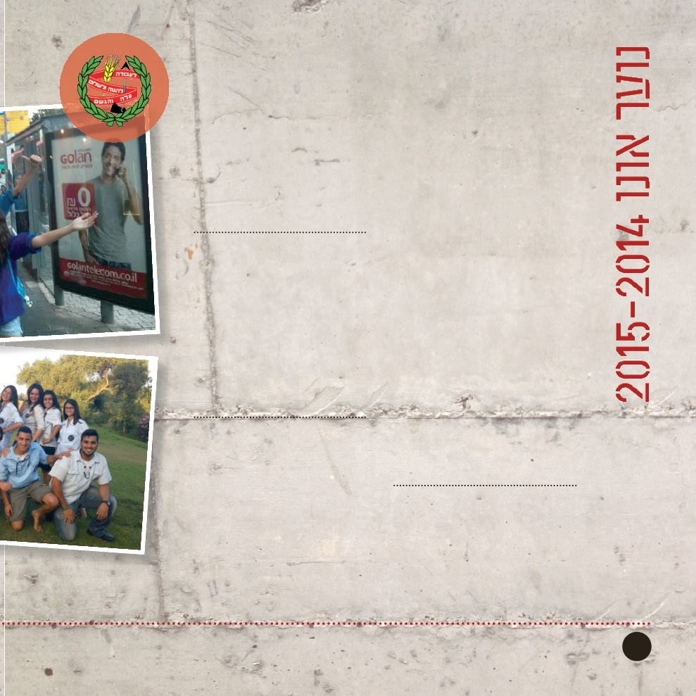

16
תנועת הנוער העובד והלומד הינה הגדולה
מבין תנועות הנוער בישראל. כיום קיימים
מאות קינים ומועדונים בכל רחבי הארץ,
מהגליל בצפון ועד הנגב בדרום בהם חברים
עשרות אלפי חניכים.
בתנועת הנוער העובד והלומד מתחנכים
לאור ערכי הציונות, הדמוקרטיה, השוויון,
השיתוף וההגשמה תוך שימת דגש על
פעילות למען הקהילה, מעורבות חברתית
ואוטונומיה של החניכים בקן.
הפעילות
בקן קריית אונו קיימות קבוצות בשכבות
ד‘-י“ב עוברים פעילות עשירה ומגוונת.
הפעילות מתקיימת בקבוצות על פי שכבות
הגיל השונות.
הנוער
העובד
והלומד
קן קריית אונו
רח׳ קפלן 65, קריית אונו
במהלך השנה מתקיימות פעילויות רבות
הכוללות טיולים, מחנות, פעילויות
חברתיות-תרבותיות ופעילות בקהילה.
ימי הפעילות:
ב
ימי שלישי בין השעות 03:61-00:81
ימי שישי בין השעות 00:81-03:61
במשך כל ימות השבוע הקן פתוח
ומתקיימות בו פעולות, ישיבות, ועדות
וערבי תרבות.
סמינר מדריכים צעירים
במהלך הקיץ יתקיים סמינר הכשרה
לקראת הדרכה לבוגרי כיתה ט'. הסמינר
פתוח לכל בוגר כיתה ט' שרוצה לקחת
אחריות, להדריך או שאכפת לו ממה
שקורה סביבו. סמינר המד"צים של
הנוער העובד והלומד הוא סמינר
מאוד איכותי, והוא מוכר על ידי משרד
החינוך.
שנת שירות
הנוער העובד והלומד מוציא כל שנה
כ-003 בני נוער בוגרי שכבה י״ב לשנת
שירות ברחבי הארץ.
בני הנוער יוצאים למשימות הדרכה
שונות ביישובים וערים שונות לאור
הערכים שהם מאמינים בהם. שנת
השירות פתוחה לכל בוגרי שכבה י״ב
לאחר בדיקת תנאי הקבלה במסגרת.